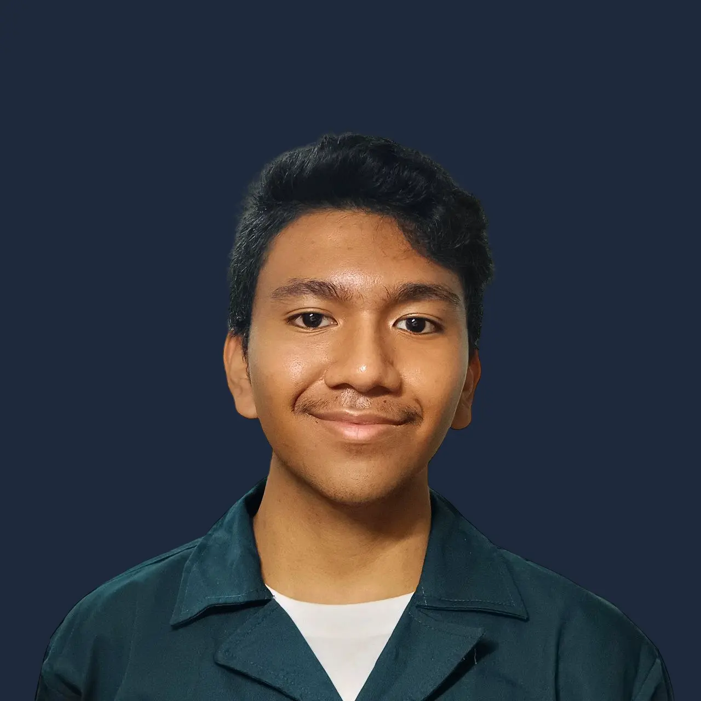
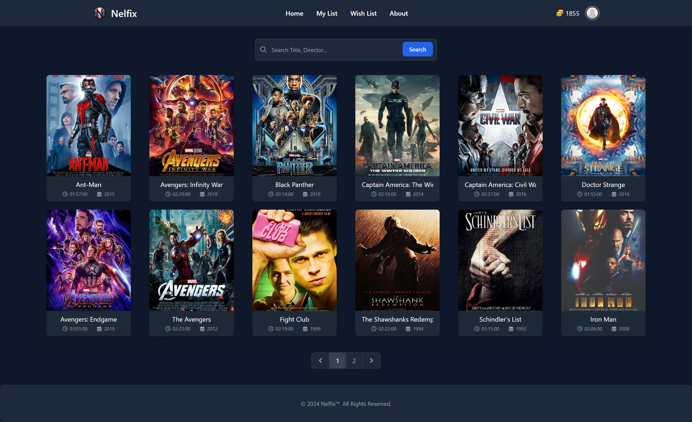
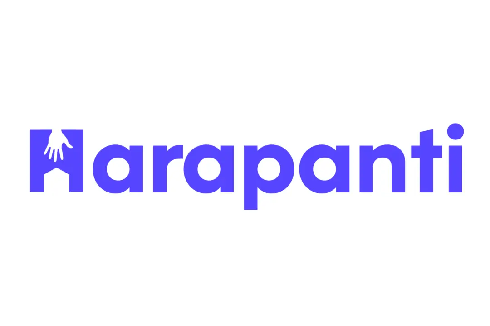
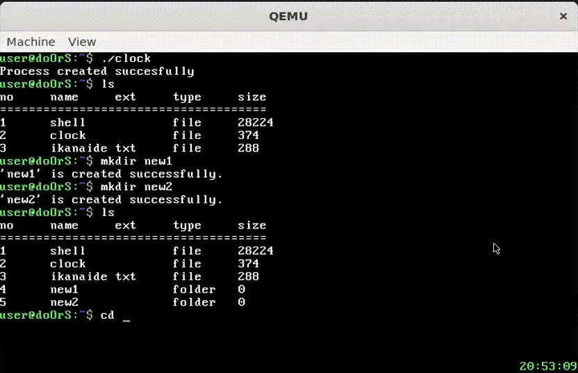
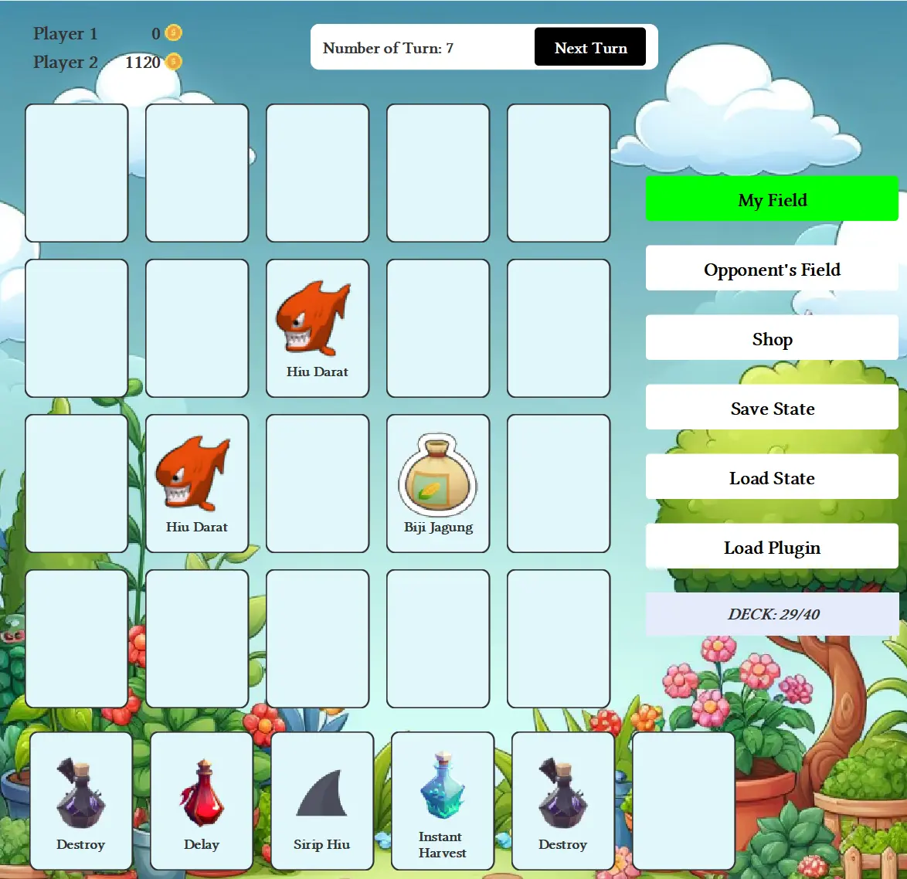
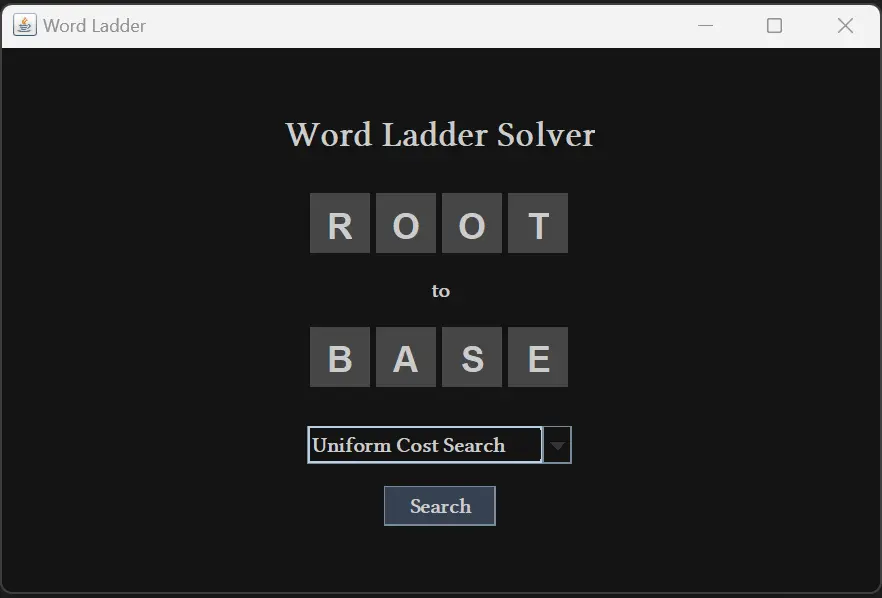
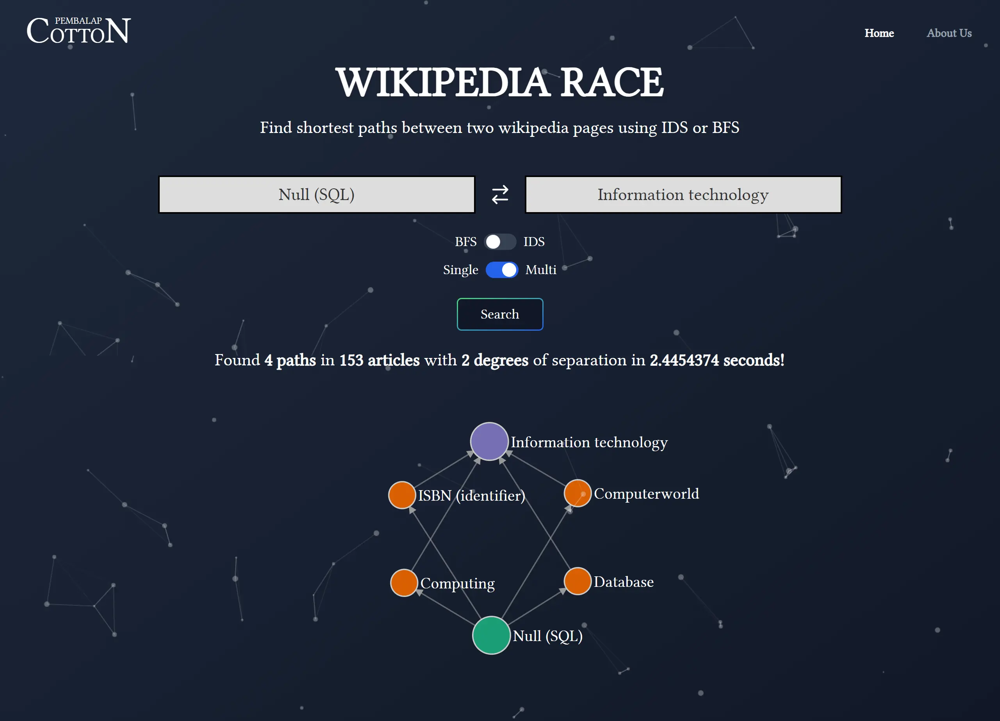
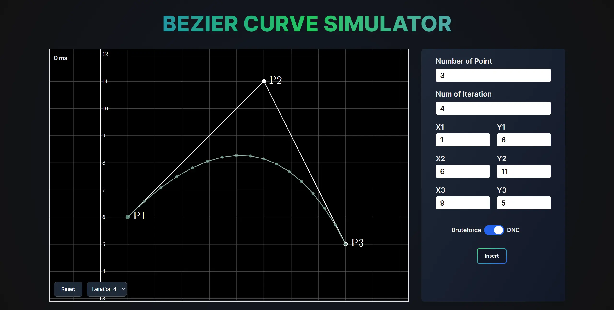
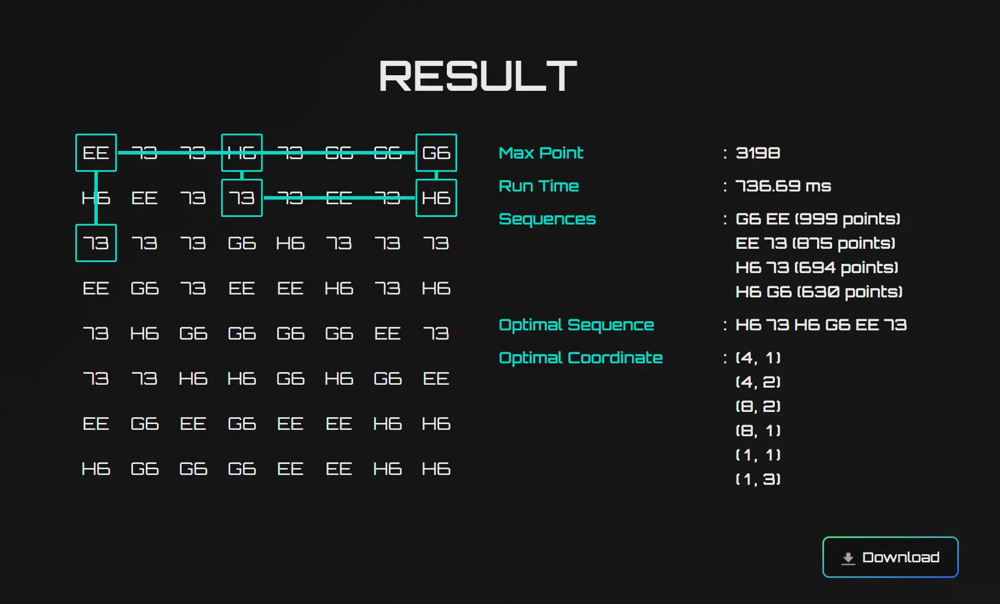

Adril Putra Merin

Adril Putra Merin
I'm a
I’m a Computer Science student at Bandung Institute of Technology with a passion for solving problems through technology. I thrive in dynamic environments and see challenges as opportunities to grow. Currently focused on Software Engineering, Machine Learning, and Algorithms, I’m eager to continue expanding my skills and building innovative solutions.
Education
SMA Negeri 1 Bekasi
Senior High School
July 2019 - July 2022
SMP Negeri 1 Bekasi
Junior High School
July 2016 - July 2019
Experience
Expedite Development
Fullstack Developer
August 2024 - now
- Connected with clients through Expedite Development, a startup that bridges freelancers and clients for various project requests.
- Worked on fullstack development tasks, delivering customized solutions to meet specific client needs and project goals.
- Handled diverse projects ranging from front-end user interface designs to back-end system integration and database management.
OSKM ITB 2024
Backend Developer
July 2024 - September 2024
- Developed backend logic and routing for a real-time chat application, enabling seamless communication between users.
- Utilized NextJS for the backend framework, integrating PostgreSQL and Drizzle for efficient database management and migrations.
- Implemented TRPC to streamline API communication, providing type-safe routing for client-server interactions.
- Leveraged WebSocket and Redis for real-time messaging and caching solutions, ensuring fast and reliable data delivery.
- Created a routing system for ITB-X event, allowing organizations to manage and showcase their presence effectively within the event.
Parade Wisuda April 2024
Frontend Developer
March 2024 - April 2024
- Developed the TA Fair page showcasing the final projects of ITB graduates using NextJS, delivering a dynamic and interactive user experience.
- Created features to display detailed information about each graduate's final project, providing a comprehensive view for visitors.
ITB Fair 2024
Frontend Developer
February 2024
- Developed the ITB Fair 2024 webpage using NextJS to build a dynamic and responsive user experience.
- Focused on creating an intuitive and engaging interface to enhance user interaction and promote event participation.
Introduction to Computing Course
Laboratory Assistant
August 2023 - December 2023
- Supervised the practicum session for more than 70 students from the School of Electrical Engineering and Informatics (STEI).
- Conducted the practicum sessions in python and provided guidance.
- Reviewed and graded the participants’ works.
Skills
Python
Java
C
C++
C#
Prolog
Docker
Javascript
Haskell
Typescript
SQL
Dart
Go
MariaDB
MySQL
PostgreSQL
MongoDB
React
Express
NestJS
Next.js
TailwindCSS
Node.js
EJS
HTML
CSS
Flutter
Firebase
Flet
QEMU
AWS
Neon
VueJs
Tensorflow
Pytorch
Prisma
Drizzle
Projects
-

Nelfix
- NestJS
- Prisma
- AWS
- PostgreSQL
- TailwindCSS
- EJS
- Docker
-

Harapanti
- Flutter
- Dart
- Firebase
- Mobile
-
Semantic Search with SBERT
- Data Science
- NLP
- SBERT
-

doOrS
- Operating System
- QEMU
- C
- Assembly
-

Farm Game
- Java
- Desktop
- Swing
- OOP
-

Word Ladder Solver
- Java
- Desktop
- Swing
- OOP
-

WikiRace Solver
- Typescript
- NextJS
- TailwindCSS
- Docker
- Go
- Gin
-

Bezier Curve Simulator
- Typescript
- React
- TailwindCSS
- Mafs
- Go
- Gin
-

Breach Protocol Solver
- Typescript
- NextJS
- TailwindCSS